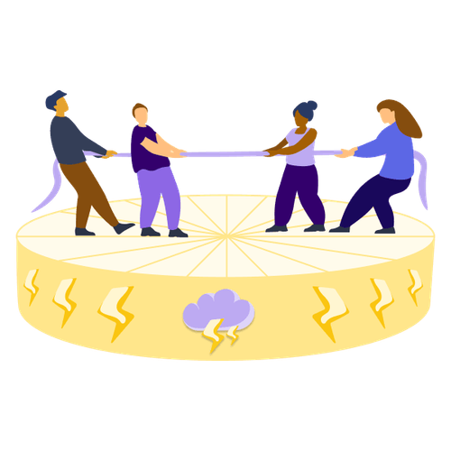

Many of Lufthansa Technik’s 4,500 employees were stuck in endless meetings. With 9 Spaces, they began building a more effective meeting culture.
Explore six non-awkward formats, methodsand exercises that help bring teams closer together.

Uncover organisational tensions and turn friction into forward motion.